Cris Assis
Tatuadora · Lisboa
Tradicional, neo-tradicional e blackwork. Linha preta firme e cor que dura — desenho pensado para a tua pele.
Lisboa, Portugal
@crisassistattoo- Lisboa, Portugal
-
Agenda aberta
- —:— em Lisboa
- @crisassistattoo
Trabalhos
Tradicional, neo-tradicional, blackwork e flash autoral, tatuados em Lisboa.
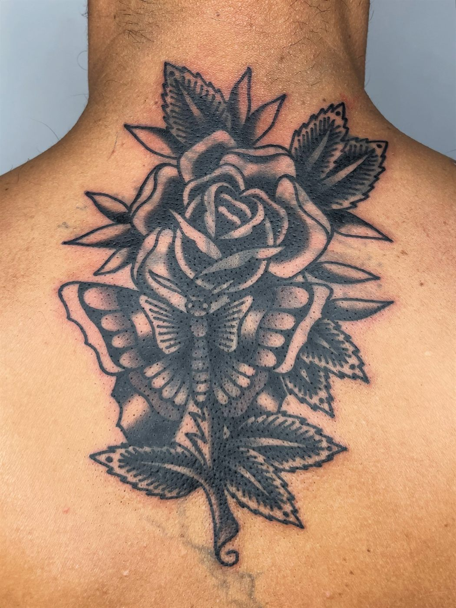
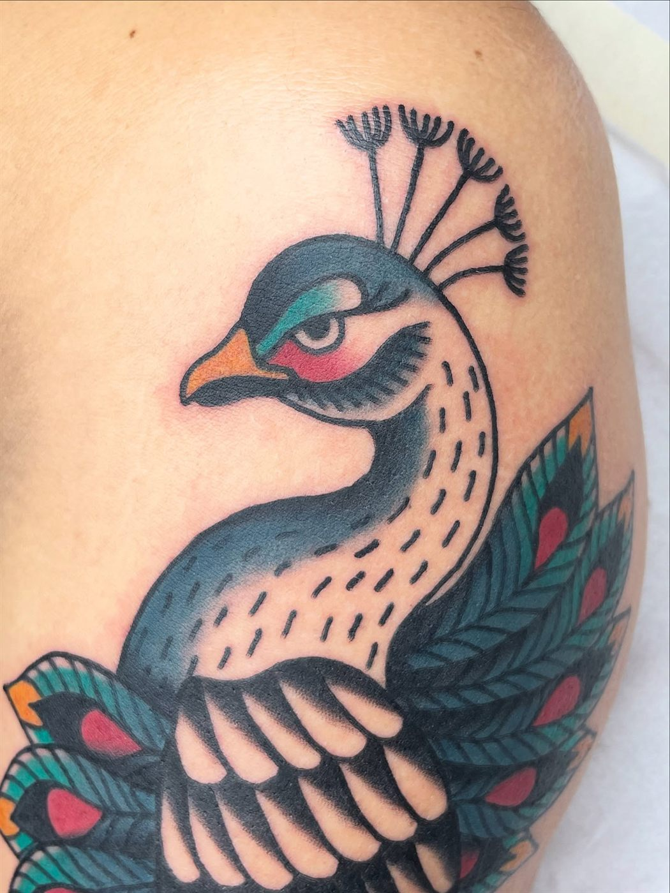
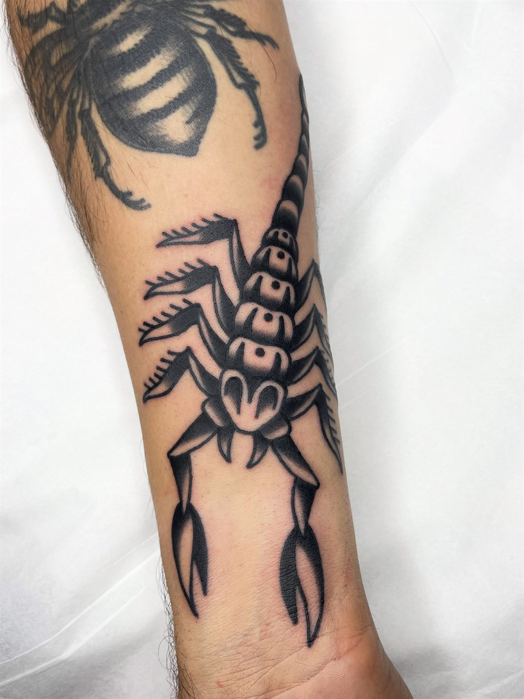
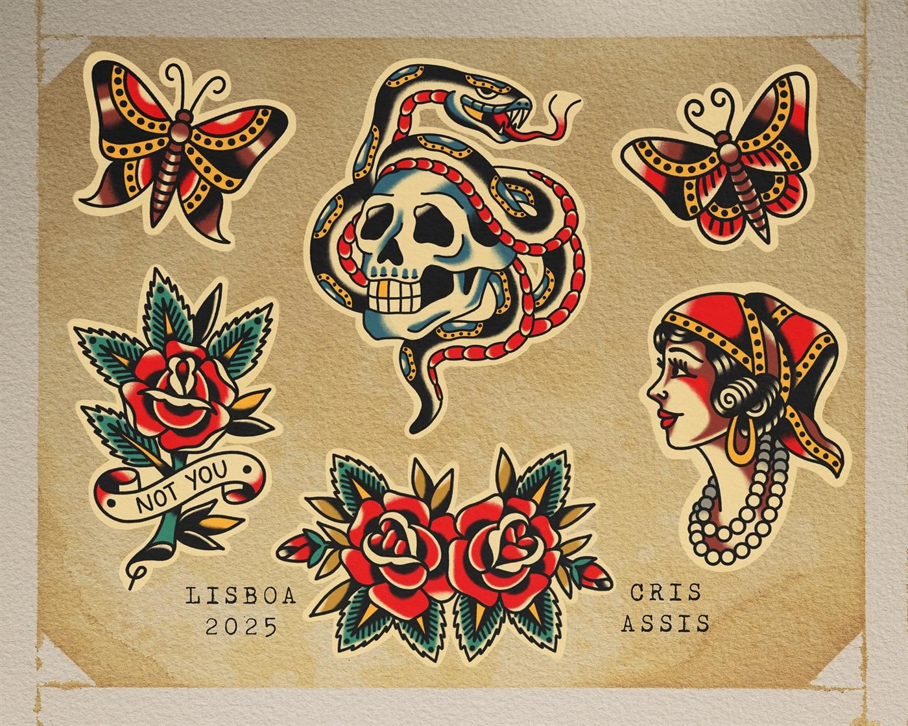
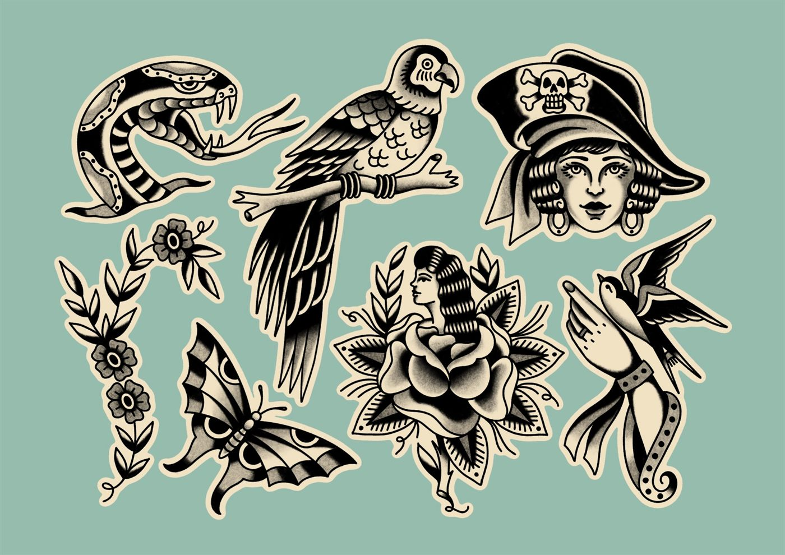
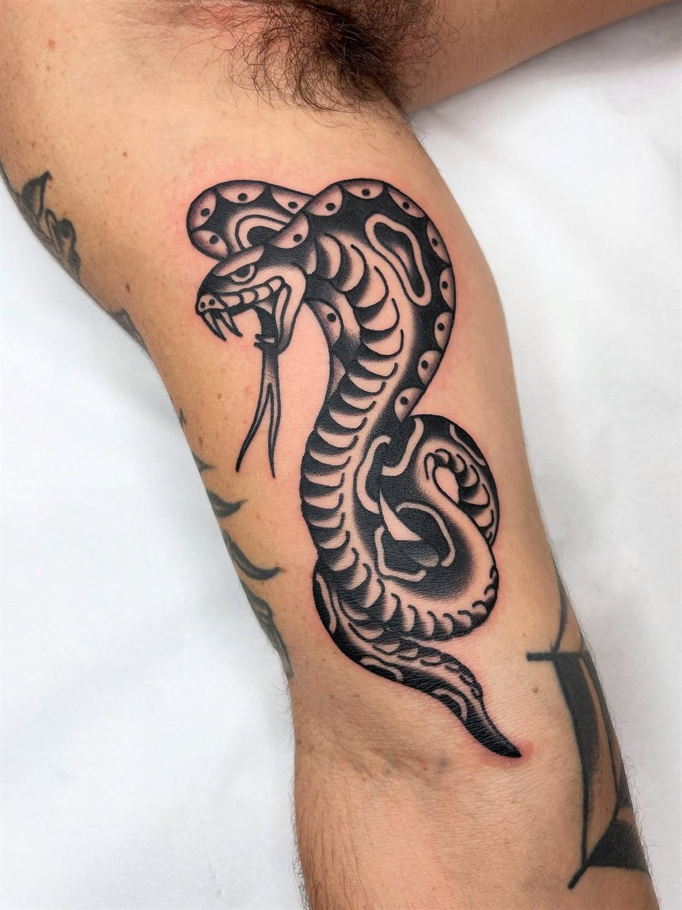
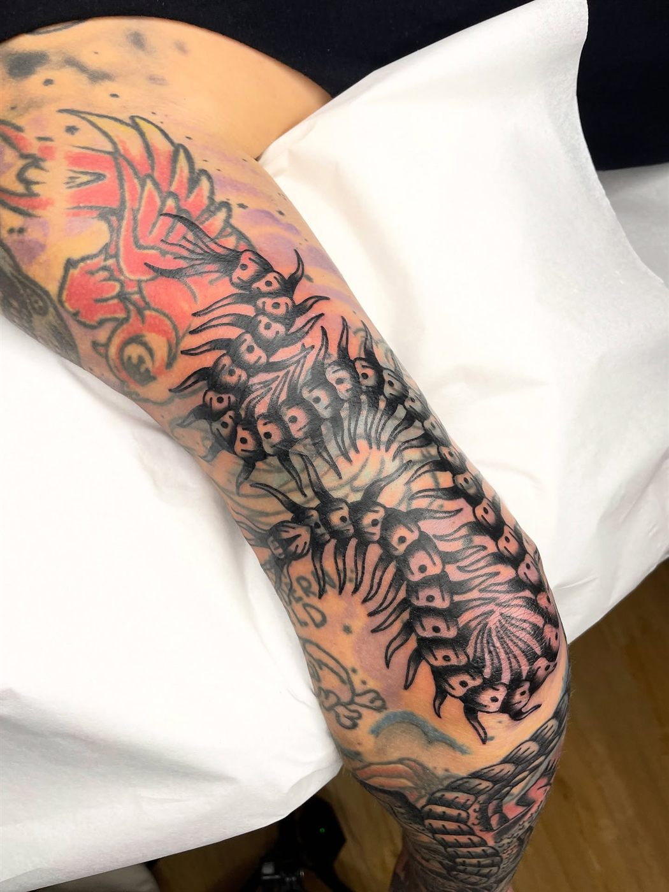
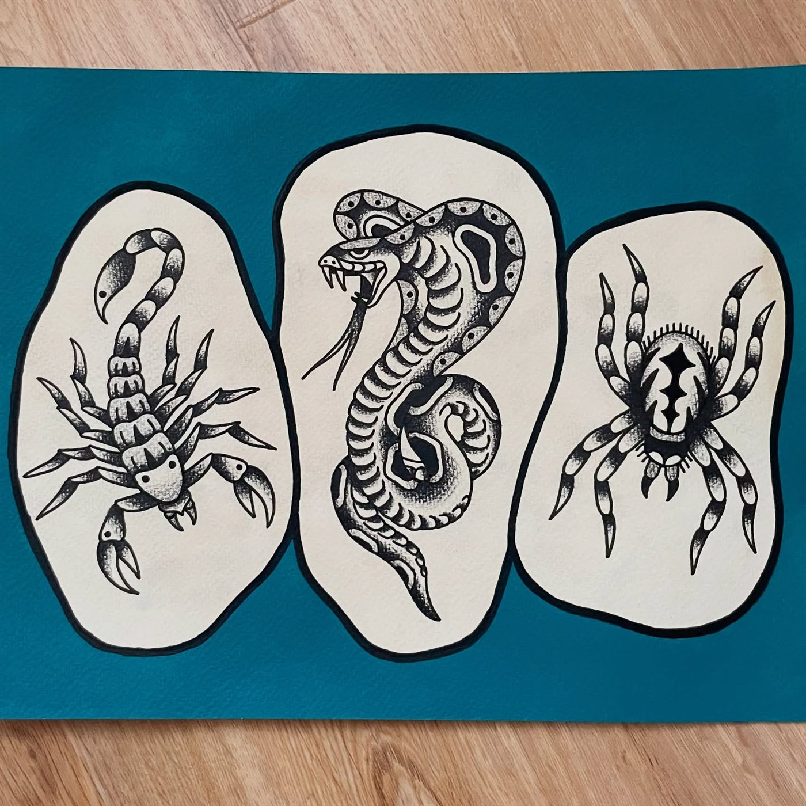
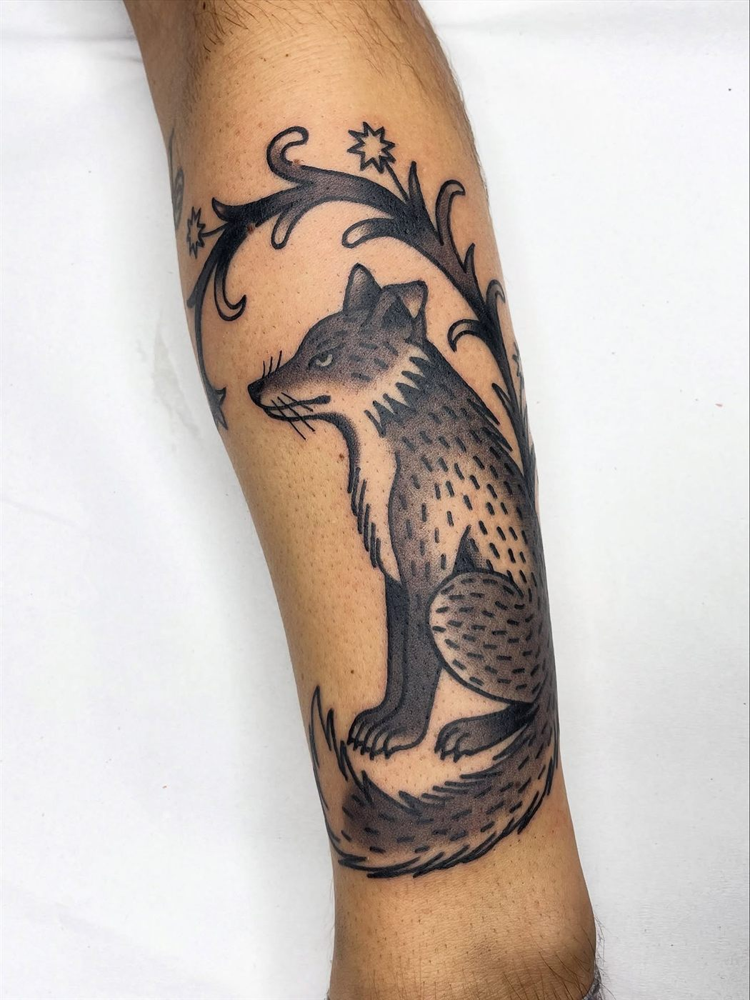

Do papel à pele
Cada peça começa no papel. Desenho o flash à mão, linha por linha, e só depois ele passa para a pele.
Escolher um flash pela DMEstilos
O que marco na pele, do contorno clássico ao preto cheio.
-
Tradicional / Old-school
Contorno preto forte e cores cheias, feitos para aguentar décadas sem esborratar.
-
Neo-tradicional
O clássico com mais volume e paleta: andorinhas, rosas e gueixas em cor cheia.
-
Blackwork
Só preto, bem sólido: teias, escorpiões e botânica com um contraste que salta na pele.
-
Flash autoral
Desenho meu, pronto para marcar no dia: escolhes da folha e saímos a tatuar.
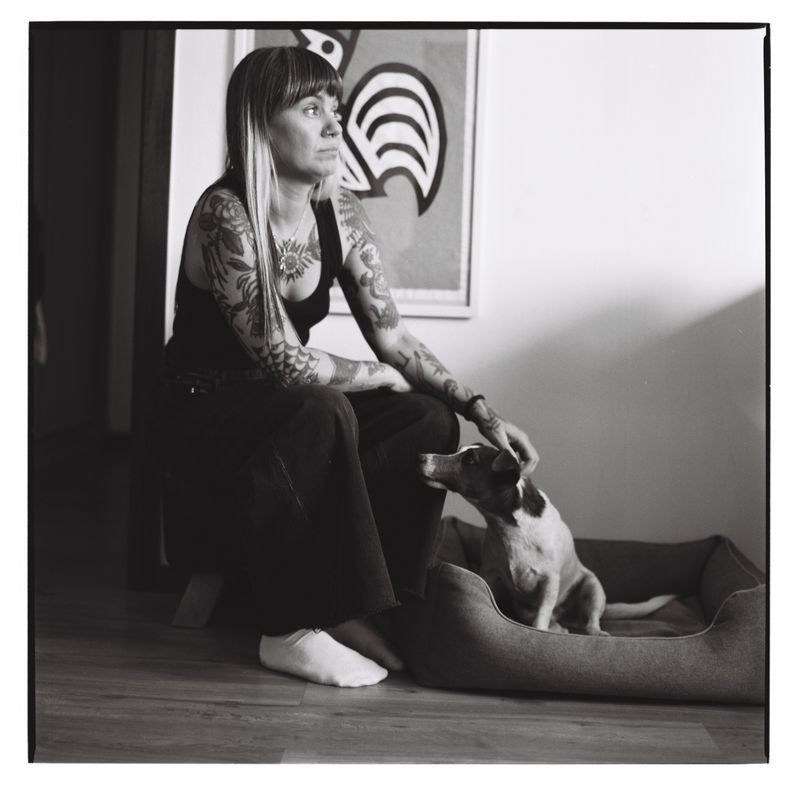
Sobre
Brasileira, a tatuar em Lisboa.
Faço tradicional, neo-tradicional e blackwork — linha preta forte, preenchimento sólido e flash de desenho próprio.
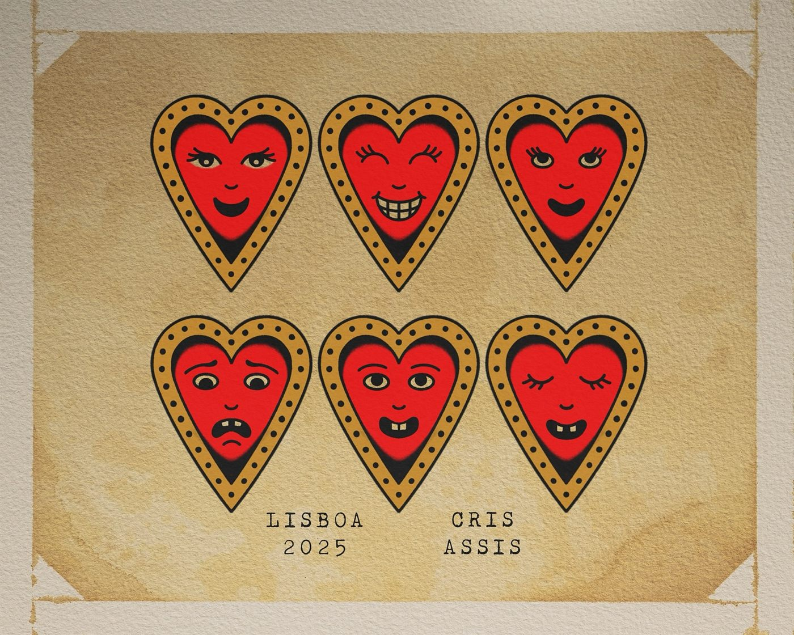
Desenho e pinto
As folhas de flash são desenho meu, e fora da pele também pinto em tela. Se queres uma peça para a parede, fala comigo.
O estúdio
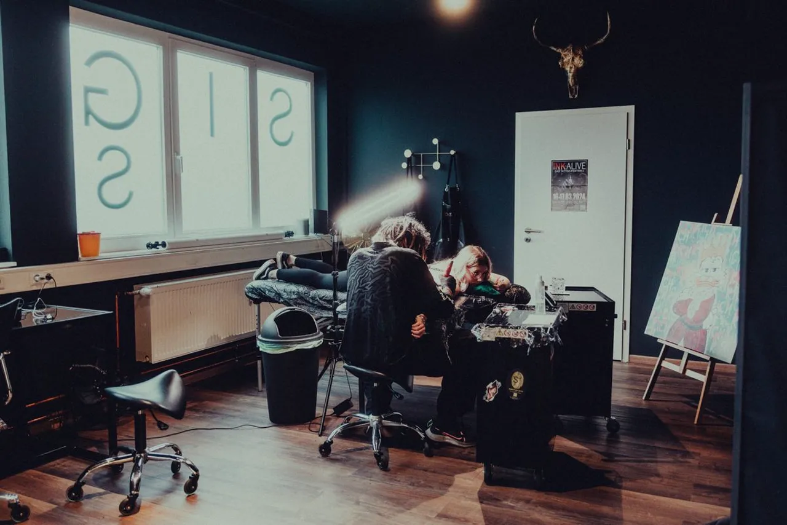
imagem ilustrativaTatuo em Lisboa, só com marcação.
A morada do estúdio é partilhada pela DM quando a sessão fica confirmada. A morada é partilhada por DM assim que confirmamos a tua sessão.
Nome do estúdio
Morada em Lisboa
Partilhada na confirmação, por DM
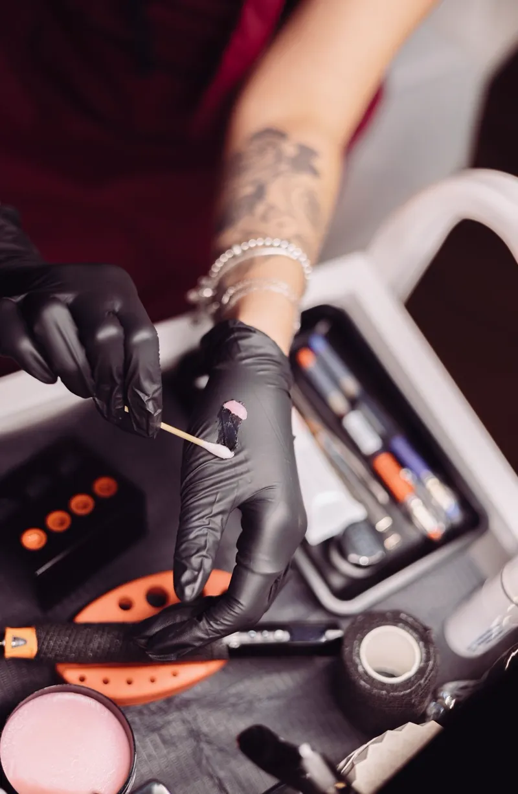
imagem ilustrativaMarcar
Marco tudo por mensagem direta no Instagram. Conta-me a ideia e trato do resto.
Na mensagem, manda-me:
a ideia ou o flash que escolheste, o sítio do corpo, o tamanho aproximado e referências, se tiveres. Respondo com o orçamento e as datas livres.